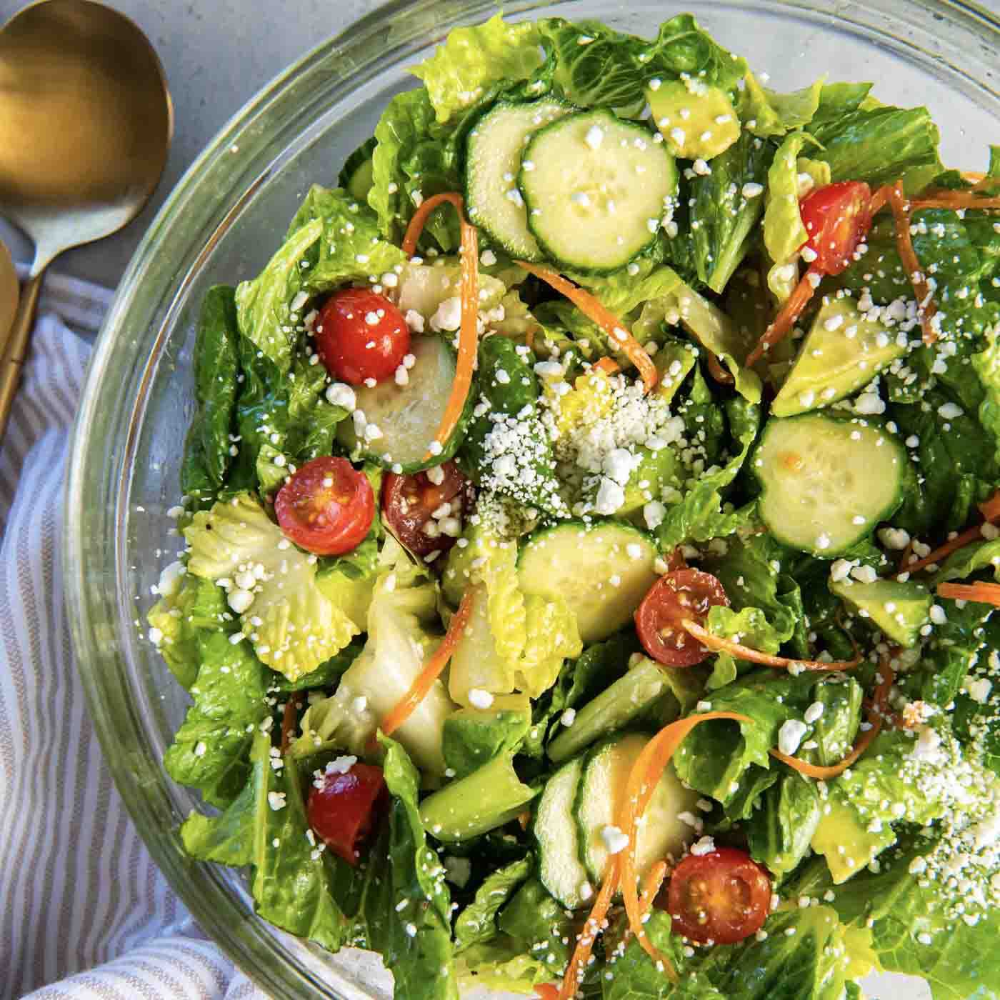

Fresh and Healthy Salad Recipe
Home

Ingredients for recipe:
- 4 cups mixed salad greens (lettuce, spinach, arugula)
- 1 cup cherry tomatoes, halved
- 1 cucumber, sliced
- 1/2 red onion, thinly sliced
- 1/2 cup shredded carrots
- 1/4 cup feta cheese, crumbled
- 1/4 cup olives (optional)
- 1/4 cup balsamic vinaigrette dressing
Instructions:
- In a large salad bowl, combine the mixed salad greens, cherry tomatoes, cucumber, red onion, and shredded carrots.
- Toss the ingredients together to ensure they are evenly mixed.
- Sprinkle the crumbled feta cheese and olives (if using) over the top of the salad.
- Drizzle the balsamic vinaigrette dressing over the salad.
- Toss the salad gently to coat all the ingredients with the dressing.
- Serve immediately as a refreshing side dish or light meal. Enjoy your fresh and healthy salad!